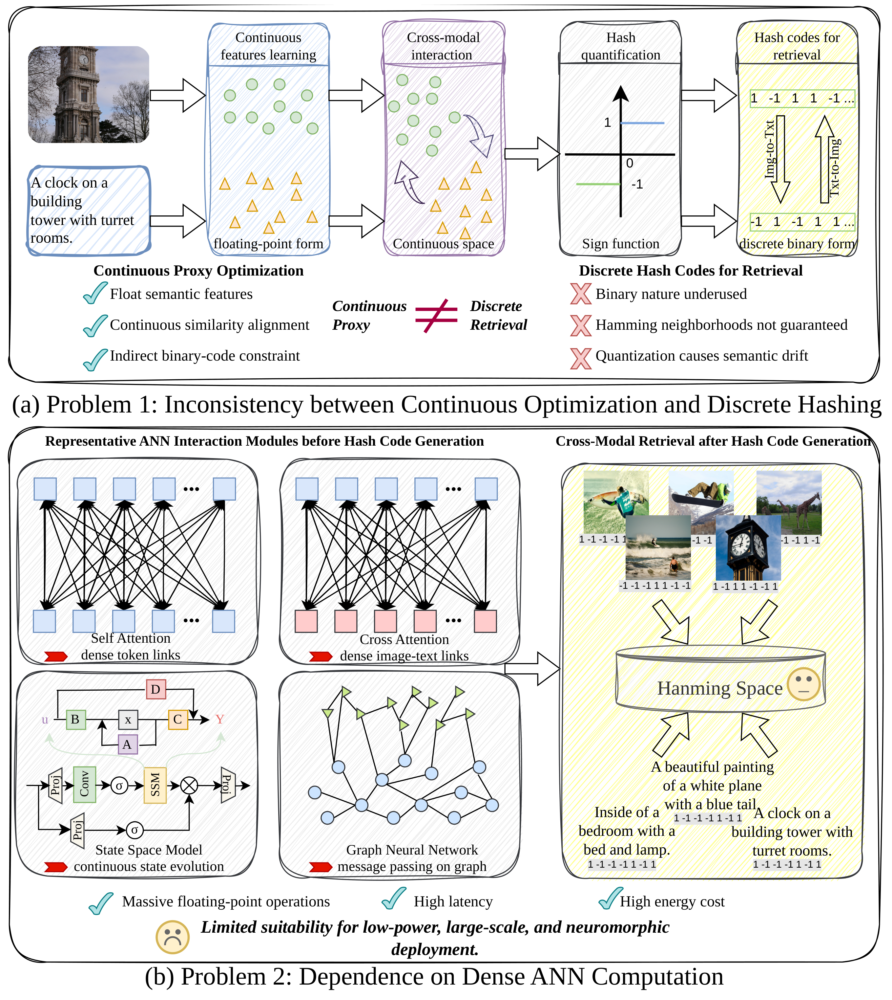
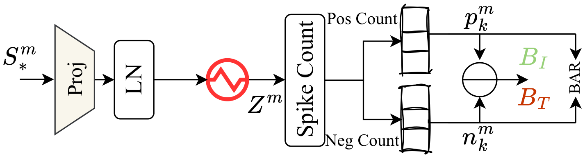
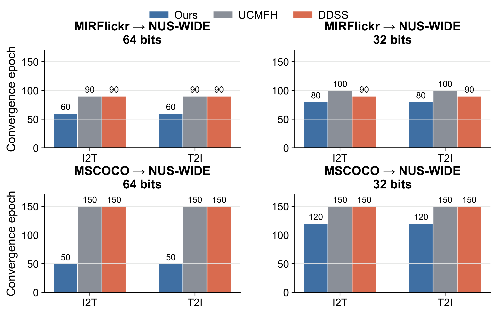
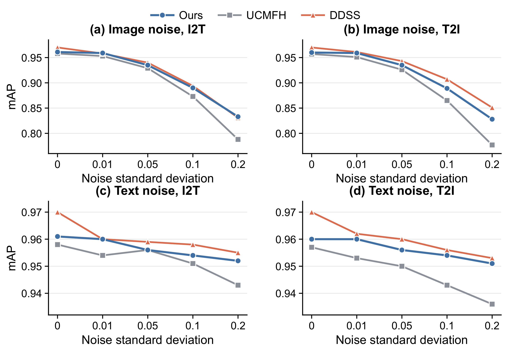
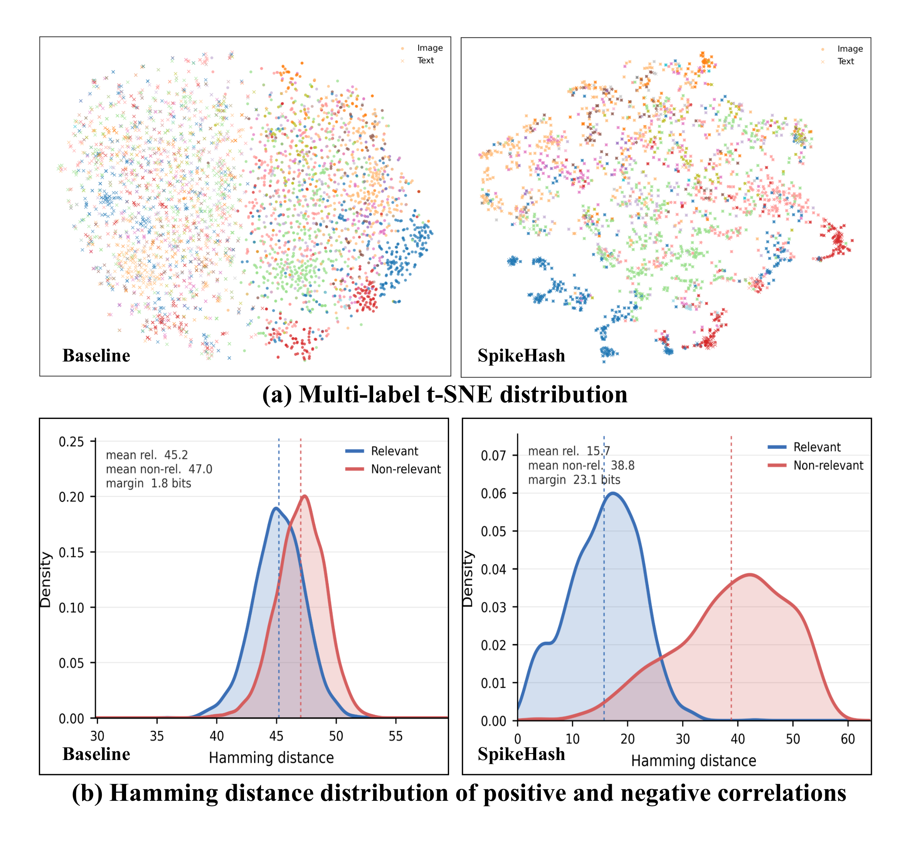
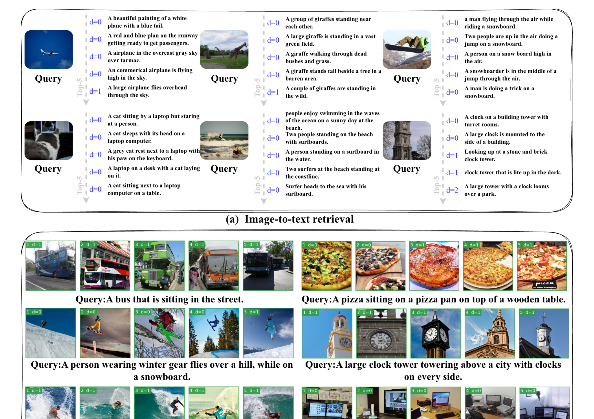
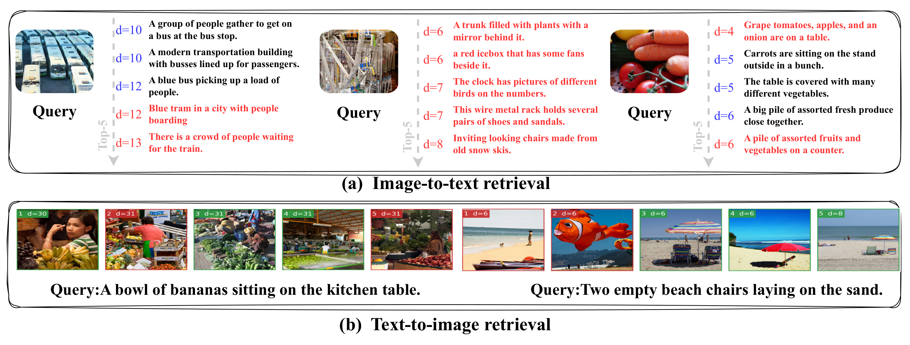

Multi-step spike encoding
Static pretrained image and text features are repeated over time and transformed by PLIF neurons into sparse spike sequences.
Unsupervised Cross-Modal Hashing · Spiking Neural Networks · Efficient Retrieval
SpikeHash is an unsupervised spiking framework for cross-modal hashing retrieval. It replaces the conventional continuous hash-head paradigm with spike-state evolution, directional spike interaction, and positive-negative spike competition, directly coupling cross-modal semantic learning with binary hash-code generation.
College of Computer Science and Technology, Jilin University · Key Laboratory of Symbolic Computation and Knowledge Engineering of Ministry of Education
Cross-modal hashing retrieval encodes heterogeneous data into compact binary codes for efficient Hamming-space search. Existing methods usually learn cross-modal semantics in continuous feature spaces and generate binary codes through a final sign operation, which weakly couples training optimization with discrete hash retrieval. We propose SpikeHash, a unified spiking framework that formulates cross-modal hashing as spike-state evolution, directional spike interaction, and competitive spike readout. Specifically, SpikeHash converts image and text features into multi-timestep spike sequences. In a shared Hamming space, the two spike sequences jointly drive the temporal evolution of a shared hash state. Cross-modal interaction is further performed through directional spike modulation, enabling each modality to influence the firing dynamics of the other. Crucially, SpikeHash replaces the conventional continuous hash head with a positive-negative hash readout, where each hash bit is produced by temporal competition between paired spike channels. Experimental results show that SpikeHash maintains competitive retrieval accuracy while effectively reducing the number of parameters, computational cost, and energy consumption, demonstrating the potential of spiking neural networks for efficient cross-modal hashing retrieval.
Motivation
Many hashing pipelines optimize dense floating-point representations and only quantize them at the end. The optimized space is continuous, whereas deployment relies on discrete Hamming neighborhoods.
Existing methods can still depend on dense ANN modules before generating compact hash codes, limiting low-power and neuromorphic deployment.
SpikeHash treats hash learning as spike-state regulation, directional cross-modal modulation, and competitive spike readout, aligning unsupervised cross-modal learning with the final binary code.

Method
Static pretrained image and text features are repeated over time and transformed by PLIF neurons into sparse spike sequences.
SSHSE builds a shared spiking hash state jointly driven by image and text spike events, then feeds the state back to both modalities through residual modulation.
CMSGI performs directional text-to-image and image-to-text channel modulation without constructing dense token-to-token attention matrices.
Each hash bit is generated by temporal competition between positive and negative spike channels, reducing the mismatch between training scores and inference codes.

Experiments
mAP@50 comparison with state-of-the-art cross-modal hashing methods on MIRFlickr, NUS-WIDE, and MSCOCO. I2T and T2I denote image-to-text and text-to-image retrieval.
| Task | Method | Source | MIRFlickr | NUS-WIDE | MSCOCO | |||||||||
|---|---|---|---|---|---|---|---|---|---|---|---|---|---|---|
| 16 bits | 32 bits | 64 bits | 128 bits | 16 bits | 32 bits | 64 bits | 128 bits | 16 bits | 32 bits | 64 bits | 128 bits | |||
| I2T | CMFH [8] | CVPR14 | 0.621 | 0.624 | 0.625 | 0.627 | 0.455 | 0.459 | 0.465 | 0.467 | 0.621 | 0.669 | 0.525 | 0.562 |
| DBRC [9] | MM18 | 0.617 | 0.619 | 0.620 | 0.621 | 0.424 | 0.459 | 0.447 | 0.447 | 0.567 | 0.591 | 0.617 | 0.627 | |
| UDCMH [10] | IJCAI18 | 0.689 | 0.698 | 0.714 | 0.717 | 0.511 | 0.519 | 0.524 | 0.558 | – | – | – | – | |
| DJSRH [11] | ICCV19 | 0.810 | 0.843 | 0.862 | 0.876 | 0.724 | 0.773 | 0.798 | 0.817 | 0.678 | 0.724 | 0.743 | 0.768 | |
| AGCH [12] | TMM21 | 0.865 | 0.887 | 0.892 | 0.912 | 0.809 | 0.830 | 0.831 | 0.852 | 0.741 | 0.772 | 0.789 | 0.806 | |
| CIRH [13] | TKDE22 | 0.901 | 0.913 | 0.929 | 0.937 | 0.815 | 0.836 | 0.854 | 0.862 | 0.797 | 0.819 | 0.830 | 0.849 | |
| UCCH [14] | TPAMI22 | 0.886 | 0.915 | 0.916 | 0.931 | 0.830 | 0.841 | 0.842 | 0.842 | 0.766 | 0.822 | 0.830 | 0.867 | |
| UCMFH [2]† | IF23 | 0.918 | 0.950 | 0.960 | 0.958 | 0.853 | 0.880 | 0.891 | 0.897 | 0.836 | 0.886 | 0.908 | 0.911 | |
| SACH [15] | NN24 | 0.884 | 0.904 | 0.917 | 0.937 | 0.789 | 0.810 | 0.832 | 0.850 | 0.665 | 0.670 | 0.702 | 0.712 | |
| UDDH [17] | TPAMI24 | – | 0.844 | 0.899 | 0.912 | – | 0.791 | 0.801 | 0.822 | – | – | – | – | |
| DDSS [3]† | IF25 | 0.947 | 0.963 | 0.969 | 0.971 | 0.871 | 0.897 | 0.907 | 0.911 | 0.900 | 0.927 | 0.940 | 0.941 | |
| USFTH [16] | MM25 | 0.899 | 0.913 | 0.929 | 0.939 | 0.814 | 0.834 | 0.855 | 0.862 | – | – | – | – | |
| AHLR [18] | NeurIPS25 | 0.820 | 0.823 | 0.827 | – | 0.678 | 0.688 | 0.699 | – | 0.645 | 0.658 | 0.680 | – | |
| SCTH [19] | AAAI26 | 0.894 | 0.916 | 0.933 | 0.938 | 0.811 | 0.838 | 0.857 | 0.863 | – | – | – | – | |
| UDCH [20] | AAAI26 | 0.893 | 0.903 | 0.905 | 0.913 | 0.857 | 0.877 | 0.884 | 0.887 | 0.856 | 0.886 | 0.901 | 0.914 | |
| SpikeHash | Ours | 0.932 | 0.951 | 0.958 | 0.961 | 0.855 | 0.882 | 0.890 | 0.893 | 0.909 | 0.933 | 0.936 | 0.940 | |
| T2I | CMFH [8] | CVPR14 | 0.642 | 0.662 | 0.676 | 0.685 | 0.529 | 0.577 | 0.614 | 0.645 | 0.627 | 0.667 | 0.554 | 0.595 |
| DBRC [9] | MM18 | 0.618 | 0.622 | 0.626 | 0.628 | 0.455 | 0.459 | 0.468 | 0.473 | 0.635 | 0.671 | 0.697 | 0.735 | |
| UDCMH [10] | IJCAI18 | 0.692 | 0.704 | 0.718 | 0.733 | 0.637 | 0.653 | 0.695 | 0.716 | – | – | – | – | |
| DJSRH [11] | ICCV19 | 0.786 | 0.822 | 0.835 | 0.847 | 0.712 | 0.744 | 0.771 | 0.789 | 0.650 | 0.753 | 0.805 | 0.823 | |
| AGCH [12] | TMM21 | 0.829 | 0.849 | 0.852 | 0.880 | 0.769 | 0.780 | 0.798 | 0.802 | 0.746 | 0.774 | 0.797 | 0.817 | |
| CIRH [13] | TKDE22 | 0.867 | 0.885 | 0.900 | 0.901 | 0.774 | 0.803 | 0.810 | 0.817 | 0.811 | 0.847 | 0.872 | 0.895 | |
| UCCH [14] | TPAMI22 | 0.832 | 0.901 | 0.906 | 0.919 | 0.823 | 0.839 | 0.833 | 0.839 | 0.765 | 0.820 | 0.822 | 0.866 | |
| UCMFH [2]† | IF23 | 0.921 | 0.948 | 0.960 | 0.957 | 0.857 | 0.882 | 0.899 | 0.900 | 0.826 | 0.884 | 0.899 | 0.907 | |
| SACH [15] | NN24 | 0.852 | 0.869 | 0.875 | 0.878 | 0.744 | 0.771 | 0.768 | 0.776 | 0.662 | 0.672 | 0.715 | 0.711 | |
| UDDH [17] | TPAMI24 | – | 0.835 | 0.858 | 0.869 | – | 0.771 | 0.785 | 0.802 | – | – | – | – | |
| DDSS [3]† | IF25 | 0.948 | 0.965 | 0.968 | 0.970 | 0.874 | 0.903 | 0.912 | 0.916 | 0.896 | 0.928 | 0.940 | 0.938 | |
| USFTH [16] | MM25 | 0.859 | 0.878 | 0.885 | 0.892 | 0.770 | 0.785 | 0.799 | 0.805 | – | – | – | – | |
| AHLR [18] | NeurIPS25 | 0.805 | 0.805 | 0.815 | – | 0.695 | 0.704 | 0.714 | – | 0.645 | 0.656 | 0.667 | – | |
| SCTH [19] | AAAI26 | 0.897 | 0.915 | 0.935 | 0.937 | 0.810 | 0.839 | 0.857 | 0.862 | – | – | – | – | |
| UDCH [20] | AAAI26 | 0.884 | 0.897 | 0.903 | 0.909 | 0.831 | 0.846 | 0.855 | 0.858 | 0.856 | 0.885 | 0.901 | 0.912 | |
| SpikeHash | Ours | 0.933 | 0.950 | 0.958 | 0.960 | 0.851 | 0.882 | 0.890 | 0.891 | 0.910 | 0.933 | 0.936 | 0.939 | |
† indicates methods using the same pretrained features as SpikeHash. “–” indicates that the original paper did not report the setting.
Efficiency
Compared with representative CLIP-based hashing baselines, SpikeHash preserves competitive retrieval accuracy while substantially reducing the hash-learning framework size, computation, and estimated energy consumption.
fewer parameters than UCMFH
fewer operations than UCMFH
lower estimated energy than UCMFH
Percentages are computed from the reported 128-bit MIRFlickr efficiency comparison: SpikeHash uses 2.19M parameters, 8.53M operations, and 39 μJ estimated energy, compared with 22.05M / 22.04M / 101 μJ for UCMFH and 14.37M / 14.40M / 71 μJ for DDSS.
Analysis



Qualitative Results


SpikeHash still faces complex challenges in fine-grained semantic retrieval scenarios. However, these failure samples are usually not entirely irrelevant. Instead, they share partial visual objects or scene elements with the query. This indicates that distinguishing neighboring fine-grained concepts in a compact binary hashing space remains a challenging problem.
Conclusion
After years of development, cross modal hashing has made steady progress in retrieval performance. However, most existing methods still follow the basic paradigm of continuous representation learning followed by final binary mapping, while the mechanism of binary code generation itself remains relatively underexplored.
In this paper, we propose SpikeHash, a unified spiking computation framework for cross modal hash retrieval. SpikeHash reformulates hash code generation as an event driven process that integrates spiking state evolution, directional cross modal modulation, and positive negative spike competition readout. As a result, binary codes are no longer post processed outputs of continuous representations, but retrieval representations directly formed by neural dynamics.
Experimental results show that SpikeHash achieves competitive retrieval performance on multiple benchmark datasets and under different code length settings, while showing clear advantages in parameter size, computation, and energy consumption. More importantly, SpikeHash shows that spiking mechanisms are not only a low power computing strategy, but also an effective way to rethink the mechanism of discrete code generation in cross modal hashing. We hope this exploration encourages cross modal hashing research to move beyond continuous representation enhancement and toward innovation in the binary representation generation paradigm itself.
Citation
@misc{zhang2026spikehashlearningbinarycodes,
title={SpikeHash: Learning Binary Codes with Spiking Neural Networks for Cross-Modal Hashing Retrieval},
author={Yukuan Zhang and Jiarui Zhao and Shangqing Nie and Shengsheng Wang},
year={2026},
eprint={2606.00740},
archivePrefix={arXiv},
primaryClass={cs.IR},
url={https://arxiv.org/abs/2606.00740},
}This work is supported by the National Natural Science Foundation of China (62376106), The Science and Technology Development Plan of Jilin Province (20250102212JC).